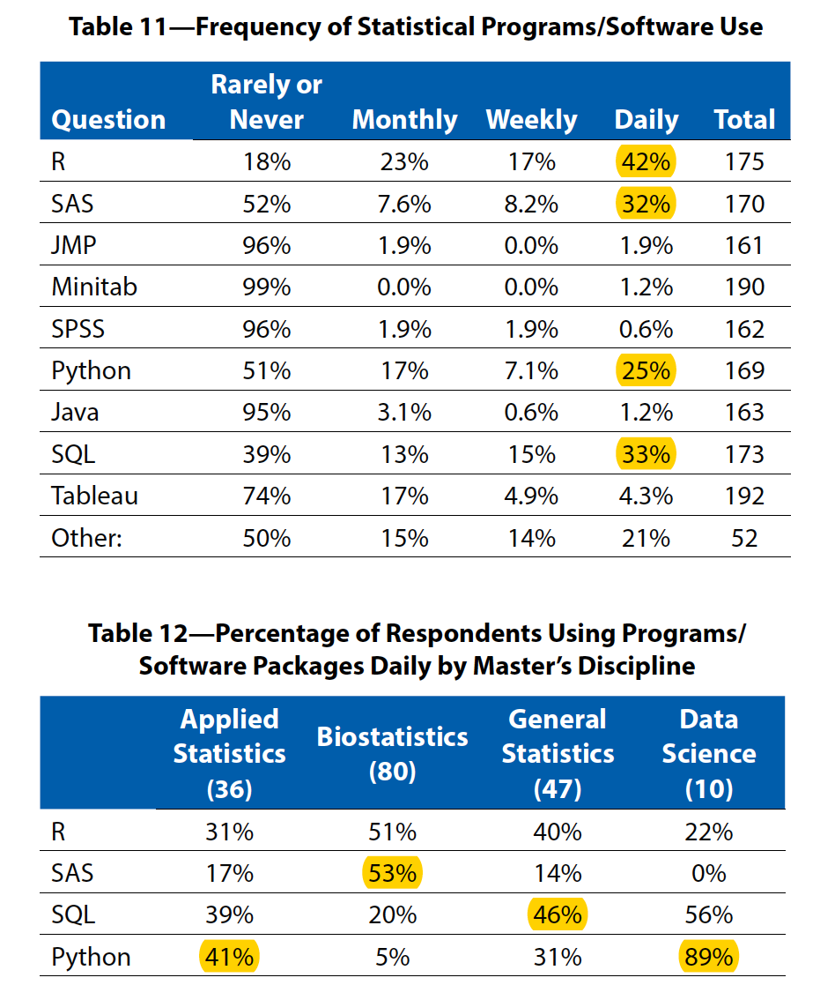

Course Introduction
Biostat 203B
1 Statistics and data science
Statistics, the science of data analysis, is the applied mathematics in the 21st century.
Data is increasing in volume, velocity, and variety.
My favorite definition of a data scientist:
A data scientist is someone who is better at statistics than any software engineer and better at software engineering than any statistician.
{{< tweet user="josh_wills" id="198093512149958656" >}}2 Big data in 1990s
| Data Size | Bytes | Storage Mode |
|---|---|---|
| tiny | \(10^2\) | piece of paper |
| small | \(10^4\) | a few pieces of paper |
| medium | \(10^6\) (MB) | a floppy disk |
| large | \(10^8\) | hard disk |
| huge | \(10^9\) (GB) | hard disk(s) |
| massive | \(10^{12}\) (TB) | hard disk(s); RAID storage |
3 Big data in 21st centry
4V’s of big data:

Source: IBM.
4 Who are hiring data scientists?
Following tables are based on a survey of 403 students who earned a master’s degree in statistics, biostatistics, or a related field (actuarial science, data science, informatics, math with stats focus) during the 2019–2020 academic year.

Source: AmStat News (2021 Nov).
there were more than 109 unique—although similar—job titles. The most common were data scientist (20), biostatistician (18), data analyst (9), biostatistician I (7), and statistician (5).
5 A typical data scientist on LinkedIn
A position posted by Genetech.

6 Course description
7 Why R?

If time permits, I’ll add some Python code in the lectures.
8 What I expect from you
You are curious and are excited about “figuring stuff out”.
You are proficient in coding and debugging (or are ready to work to get there).
You are willing to ask questions.
9 What you can expect from me
I value your learning experience and process.
I’m flexible with respect to the topics we cover.
I’m happy to share my professional connections.
I’ll try my best to be responsive in class, in office hours, and on Slack.
10 More (free) UCLA resources for learning data science
IDRE workshops: https://idre.ucla.edu/calendar
QCBio workshops: https://qcb.ucla.edu/collaboratory/workshops/